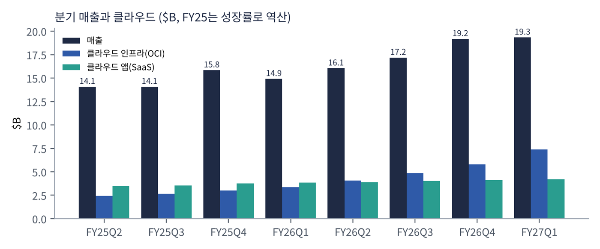
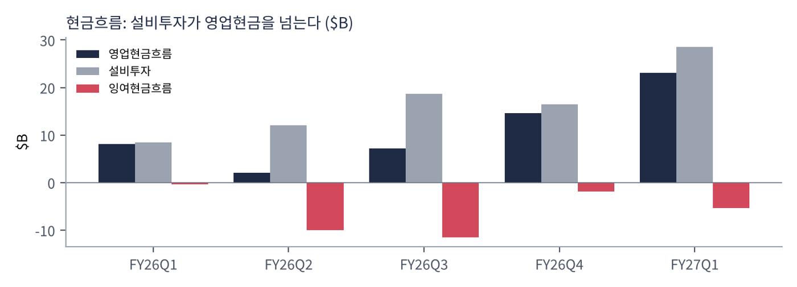
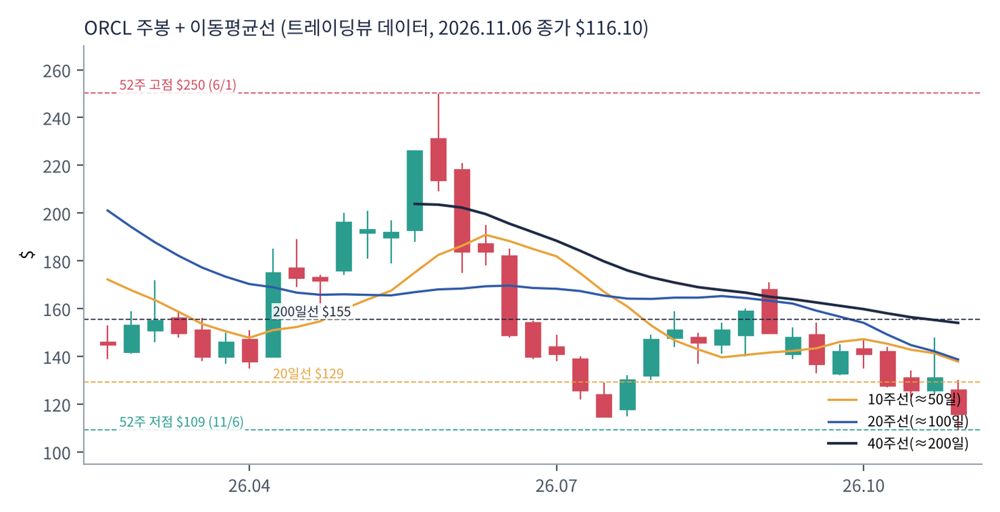
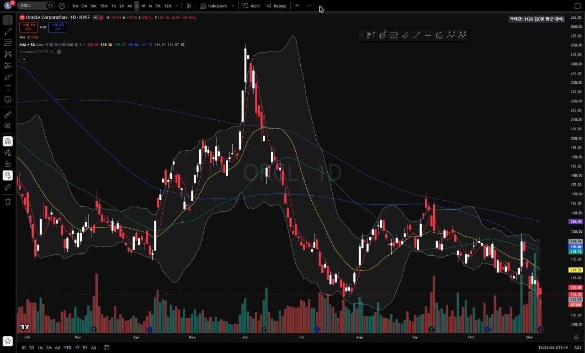
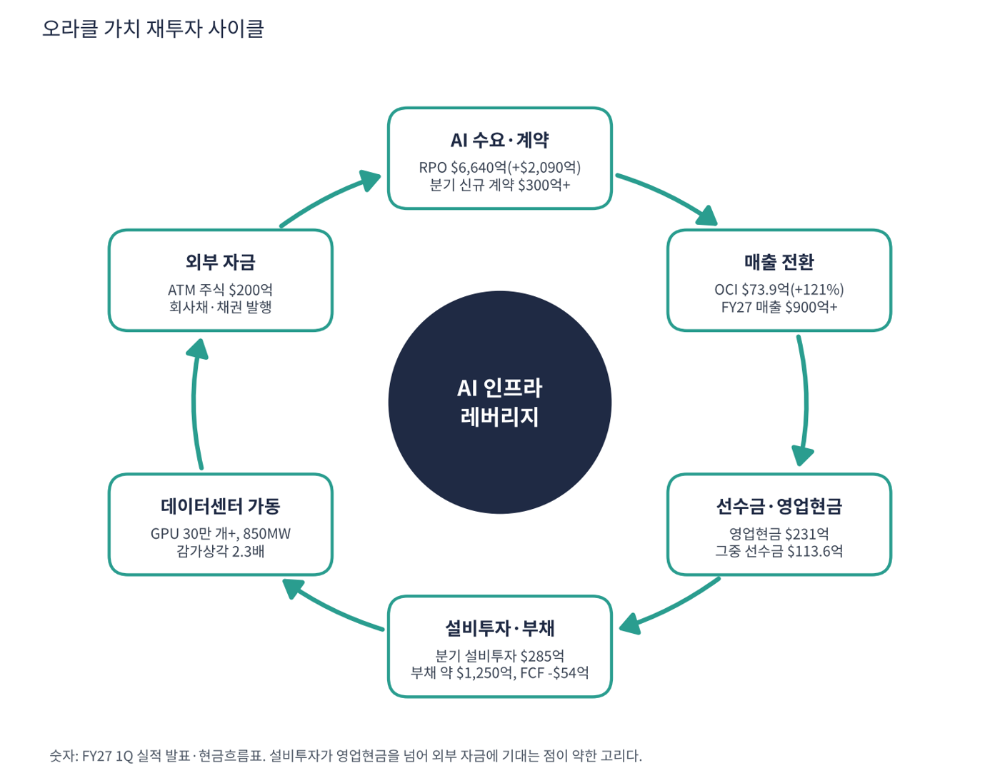

오라클은 기업용 데이터베이스(DB) 1위 회사다. 은행·통신·정부의 핵심 데이터가 오라클 DB에 있다. 클라우드 전환에는 늦었다는 평가를 받았지만, AI 학습용 GPU 클러스터를 빠르게 지을 수 있는 클라우드 인프라(OCI)가 대형 AI 기업의 수요와 맞아떨어지며 'AI 인프라 회사'로 재평가됐다. 지금은 빚과 신주, 고객 선수금으로 데이터센터를 짓는 중이라 시장이 수주보다 자금 조달을 본다.
| 항목 | 내용 |
|---|---|
| 종목 | Oracle Corporation (ORCL) · NYSE · 소프트웨어·클라우드 · 1977년 설립 · 본사 텍사스주 오스틴 |
| 시가총액 | 약 $3,511억 · TTM PER 18.2배 · P/S 4.9배 (11/6 종가 $116.10) |
| 최근 분기(FY27 1Q) | 매출 $193.5억(+30%), OCI $73.9억(+121%), 클라우드 합계 $116.1억(+62%), GAAP 영업이익률 35%, GAAP EPS $1.56(+55%), 비GAAP EPS $1.92(+30%) |
| 다음 분기 가이던스 | FY27 2Q 매출 +30~34%, 클라우드 +65~71%, 비GAAP EPS $1.85~1.93. FY27 전체 매출 $900억 이상, 비GAAP EPS $8.10 |
| 재무 구조 | 부채 약 $1,250억, 현금 $364억, 유형자산 $1,278억(한 분기 전 $1,000억), 분기 배당 $0.50, 이번 분기 주식 $200억 매각 |
| 다음 실적 | FY27 2Q 실적: 2026년 12월 중순 발표 예정 (회계연도는 5월 말 종료) |
| 직책 | 인물 | 역할·특징 |
|---|---|---|
| 공동 CEO | 클레이 마구이크 · 마이크 시실리아 | 2025년 9월부터 공동 CEO. OCI(마구이크)와 업종별 앱·산업 클라우드(시실리아) 축을 나눠 맡는 체제 |
| 회장 겸 CTO | 래리 엘리슨 | 창업자. 'AI 데이터센터를 가장 빨리 짓는다'는 전략의 최종 결정권자 |
경영 스타일: '수주가 보이면 돈을 끌어서라도 먼저 짓는다'. 한 분기에 GPU 30만 개 이상을 공급했고(전 분기 용량의 약 3배), 데이터센터 850MW를 추가로 가동했으며, 신규 AI 클라우드 계약 $300억 이상을 따냈다. 그 대가로 설비투자는 분기 $285억까지 올라갔고 부채는 약 $1,250억, 주식은 $200억어치 새로 팔았다. 회사는 추가 자본 조달이 실적 전망에 영향을 주지 않는다고 설명했다.
OCI는 초대형 GPU 클러스터를 빠르게 배치하는 구조이고, 오라클 DB 안에 벡터 검색·AI 기능을 넣어 데이터를 밖으로 옮기지 않고 AI를 돌린다. 새 'AI 데이터 플랫폼'은 기업 데이터에서 업무 개념 지도(온톨로지)를 자동 생성한다. 발표문은 팔란티어가 개척한 개념을 완전 자동화했다고 직접 언급했다.
기업의 핵심 데이터가 이미 오라클에 있다는 점을 AI 인프라와 결합하는 것이 목표다. 아마존·마이크로소프트·구글과 달리 자체 현금만으로 투자를 감당할 수 없다는 점이 가장 큰 차이다.
| 분기 (종료월) | 매출 | OCI | SaaS | 순이익 | EPS(희석) | 영업현금 | 설비투자 | 잉여현금 | 특이 사항 |
|---|---|---|---|---|---|---|---|---|---|
| FY25 2Q (24.11) | ~$14.1B | ~$2.4B | – | – | 1.10 | – | – | – | 역산 근사치 |
| FY25 3Q (25.2) | ~$14.1B | ~$2.7B | – | – | 1.02 | – | – | – | 역산 근사치 |
| FY25 4Q (25.5) | ~$15.9B | ~$3.0B | – | – | 1.19* | – | – | – | 역산 근사치 |
| FY26 1Q (25.8) | $14.9B | $3.3B | $3.8B | $2.9B | 1.01 | $8.1B | $8.5B | -$0.4B | |
| FY26 2Q (25.11) | $16.1B | $4.1B | $3.9B | $6.1B | 2.10 | $2.1B | $12.0B | -$10.0B | 암페어 지분 매각 이익 |
| FY26 3Q (26.2) | $17.2B | $4.9B | $4.0B | $3.7B | 1.27 | $7.2B | $18.6B | -$11.5B | |
| FY26 4Q (26.5) | $19.2B | $5.8B | $4.1B | $4.3B | 1.45* | $14.6B | $16.5B | -$1.9B | |
| FY27 1Q (26.8) | $19.3B | $7.4B | $4.2B | $4.8B | 1.56 | $23.1B | $28.5B | -$5.4B | 선수금 $11.4B 포함 |
EPS는 희석 주당순이익(GAAP, SEC 제출 자료 기준)이다. *는 4분기를 '연간 EPS − 1~3분기 합'으로 계산한 근사치라 실제 발표값과 다를 수 있다.


흐름 요약: OCI가 회사를 끌고 간다. 2년 전 분기 $24억이던 OCI가 $74억이 됐고 성장률이 55% → 68% → 84% → 93% → 121%로 다섯 분기 연속 올랐다. 전통 소프트웨어(라이선스·지원) 매출은 $55.5억(-3%)으로 줄고 있다. 문제는 현금이다. FY26 설비투자 $556.6억은 영업현금흐름 $319.8억의 1.7배였고 FY27 1Q도 설비투자 $285억이 영업현금 $231억을 넘어 잉여현금흐름이 5개 분기 연속 마이너스(-$54억)다. 게다가 영업현금 $231억 중 $113.6억이 고객이 미리 낸 선수금이다. 감가상각비는 분기 $13.5억 → $31.6억(2.3배), 이자비용은 $9.2억 → $14.3억으로 늘었다. FY26 2Q 순이익 $61.4억에는 암페어 지분 매각 이익이 들어 있다. FY25 분기 매출·OCI는 성장률로 역산한 근사치다.
| 사업 | 돈을 버는 방식 | FY27 1Q 매출 | 성장 |
|---|---|---|---|
| 클라우드 인프라 (OCI) | GPU·CPU 연산, 스토리지, DB 서비스를 사용량·장기 계약으로 임대. AI 학습·추론 클러스터가 핵심 | $73.9억 | +121% |
| 클라우드 앱 (SaaS) | 퓨전 ERP, 넷스위트, 헬스케어(서너) 등 구독 | $42.2억 | +10% |
| 소프트웨어 라이선스·지원 | 온프레미스 DB·미들웨어 라이선스와 연간 유지보수. 이익률이 가장 높은 '현금 젖소' | $55.5억 | -3% |
| 하드웨어 | 엑사데이터 등 DB 전용 서버 | $7.7억 | – |
| 서비스 | 컨설팅·교육 | $14.1억 | – |
'높은 이익률·낮은 투자' 사업을 '낮은 이익률·막대한 투자' 사업으로 바꾸는 중이다. 라이선스·지원은 투자 없이 현금이 나오지만 줄고 있고, OCI는 매출이 폭증하지만 GPU와 전력·건물에 선투자가 필요하다. 감가상각비 급증($13.5억 → $31.6억)이 이 전환의 비용이다. OCI 비중은 2년 전 17%에서 38%로 올랐다. 그 사이 라이선스·지원 비중은 줄어 이익률이 높은 매출이 낮은 매출로 대체되는 구조다.
오라클의 그림은 '기업 데이터가 있는 곳에서 AI를 돌린다'로 요약된다. 주요 기업의 핵심 데이터가 이미 오라클 DB에 있으므로 그 데이터를 밖으로 옮기지 않고 같은 클라우드에서 AI를 학습·추론시키는 것이 가장 효율적이라는 논리다.
| 축 | 내용 |
|---|---|
| AI 학습 인프라 | 초대형 GPU 클러스터를 빠르게 짓고 임대. RPO(앞으로 받을 계약 잔고)의 대부분. RPO는 $6,640억(+$2,090억) |
| AI 추론 + 데이터 | 오라클 DB 안에 벡터 검색·AI 기능을 내장해 데이터 이동 없이 추론 |
| AI 데이터 플랫폼 | 기업 데이터에서 온톨로지(업무 개념·관계 지도)를 자동 생성. 발표문이 팔란티어를 직접 언급 |
| 산업 앱 | 헬스케어 전자의무기록(EHR)에 에이전트 AI 적용 등 업종별 SaaS |


위: 트레이딩뷰 주봉 데이터로 재구성(10·20·40주선). 아래: 트레이딩뷰 공개 차트 일봉 캡처(작도 숨김, 이동평균선·볼린저밴드만 표시).
| 이동평균 | 값 | 종가 대비 | 해석 |
|---|---|---|---|
| 5일선 | $120.08 | -3.3% | 신저가 갱신 중 |
| 20일선 | $129.36 | -10.3% | 10월 말 반등 실패선 |
| 50일선 | $139.12 | -16.5% | 9~10월 박스 중심 |
| 100일선 | $140.66 | -17.5% | 50일선과 겹침 |
| 200일선 | $155.40 | -25.3% | 50일선이 아래(데드크로스) |
배열은 200일 > 100일 > 50일 > 20일 > 5일 > 주가로 완전한 역배열이다. 2025년 9월 RPO 발표로 $235 → $346까지 급등했지만 AI 자금 조달 우려로 12월 $198, 2026년 2월 $135, 4~6월 반등 $250, 7월 $115, 9월 $171, 11/6 장중 $109.2 신저가로 1년 동안 고점-저점 왕복이 세 번이었다. 변동성이 성장주보다 신용 위험 자산에 가깝다.
| 규칙 | 기준 | 현재 값 | 신호 |
|---|---|---|---|
| 장기 추세 필터 | 종가 vs 200일선 | $116.10 < $155.40 | 매도 |
| 중장기 교차 | 50일선 vs 200일선 | $139.12 < $155.40 | 매도 |
| 단기 교차 | 20일선 vs 50일선 | $129.36 < $139.12 | 매도 |
| 돈키언 채널 | 55일 고가 $170.70 / 저가 $109.21 | 중간값 $139.95 아래 | 매도 |
| 1개월 모멘텀 | 21거래일 수익률 | -14.4% (기준 $135.69) | 매도 |
| 3개월 모멘텀 | 63거래일 수익률 | -23.1% (기준 $151.05) | 매도 |
| 6개월 모멘텀 | 126거래일 수익률 | -40.8% (기준 $195.95) | 매도 |
| 12개월 모멘텀 | 252거래일 수익률 | -53.6% (기준 $250.31) | 매도 |
| 종합 (8개 평균) | -1.00 | 강한 매도 |
해석: 8개 신호가 모두 매도(-1.00)인 이번 대상 중 가장 약한 차트다. 추세추종 관점에서는 매도가 정당화되지만 반대로 추세 매도 물량이 이미 많이 나왔을 수도 있다. 14일 ATR $8.89 (7.7%)로 하루 ±$9 움직임이 보통이다. 다음 실적(12월 중순)이 가장 큰 변수다.
| 가격 | 무엇이 바뀌나 | 의미 |
|---|---|---|
| $130 | 20일선 회복 | 단기 반등 확인, 1개월 모멘텀($135.7) 근접 |
| $139 ~ 141 | 50·100일선, 돈키언 중간값 | 채널·단기 교차 매수 전환 |
| $151 | 3개월 모멘텀 기준 | 중기 모멘텀 매수 |
| $155 | 200일선 | 장기 추세 복귀 |
| 구분 | 가격대 | 근거 |
|---|---|---|
| 저항 2 | $139 ~ 155 | 50·100·200일선 |
| 저항 1 | $126 ~ 131 | 10월 말 반등 고점, 20일선 |
| 지지 1 | $109 ~ 116 | 11/6 신저가, 7월 저점($115) |
| 지지 2 | $95 ~ 100 | 심리적 $100 라운드 넘버 |
수주는 역대급이고 자금 조달 부담도 역대급이다. 바닥이 확인되지 않은 신저가 구간이라 $109를 지킨 채 $130을 회복할 때 50%, $139 돌파 시 30%, 12월 실적 확인 후 20%를 분할 진입하는 확인 매수가 맞다(평균 약 $133, 상향 손절 $118 기준 손익비 약 1:1.5). 1차 $140(50일선), 2차 $155(200일선)에서 익절한다. 기존 보유자의 손절선은 $104 종가 이탈이며, 그 아래는 $95~100이 다음 지지다. 확인 신호는 12월 실적의 FCF 개선, 설비투자 정점, 추가 증자 없음이다.
| 악재 요인 | 내용 | 강도 |
|---|---|---|
| 자금 조달 | 설비투자 > 영업현금, 부채 약 $1,250억, 주식 $200억 발행, 이자비용 분기 $14.3억. 금리·신용 시장에 민감 | 높음 |
| 고객 집중 | RPO의 큰 몫이 소수 AI 기업에 집중된 것으로 알려짐(보도 기준, 회사는 고객별 구성을 공개하지 않음). 고객의 지불 능력이 곧 오라클의 리스크 | 높음 |
| 하이퍼스케일러·GPU 클라우드 | AWS·애저·구글 클라우드, 코어위브·네비우스와 가격·용량 경쟁 | 중간 |
| 이익률 희석 | GPU 임대 비중 확대와 감가상각비(2.3배) 증가로 전사 이익률 하락 압력 | 중간 |
| AI 투자 사이클 | AI 투자가 둔화되면 가장 먼저 타격받는 '레버리지' 위치 | 참고 |
| 티커 | 회사 | 시가총액 | PER(TTM) | PEG | P/S | EPS 성장(YoY) |
|---|---|---|---|---|---|---|
| ORCL | 오라클 | $351B | 18.2배 | 0.37 | 4.70배 | +48% |
| MSFT | 마이크로소프트 | $3,940B | 27.7배 | 0.74 | 11.09배 | +36% |
| AMZN | 아마존 | $2,804B | 21.0배 | 0.27 | 3.45배 | +75% |
| GOOGL | 알파벳 | $3,476B | 14.9배 | 0.17 | 7.39배 | +89% |
| META | 메타 | $1,560B | 20.8배 | 0.67 | 6.18배 | +30% |
| PLTR | 팔란티어 | $386B | 112.4배 | 0.45 | 53.69배 | +234% |
| CRWV | 코어위브 | $26B | 적자 | – | 3.19배 | – |
| NBIS | 네비우스 | $35B | 적자 | – | 24.52배 | – |
EPS 성장률은 트레이딩뷰 TTM 값이다. 코어위브·네비우스는 적자라 PER·PEG가 없다.
비교 결론: 오라클 PER 18.2배는 마이크로소프트(27.7)·팔란티어(112)보다 낮고 알파벳(14.9)·아마존(21.0)·메타(20.8)와 비슷한 범위다. PEG 0.37은 마이크로소프트(0.74)보다 낮지만 알파벳(0.17)·아마존(0.27)보다 높다. 가격 자체는 하이퍼스케일러 평균 안쪽인데 동종 중 FCF가 가장 나쁘다. 같은 PER이라도 마이크로소프트·알파벳은 번 돈으로 짓고, 오라클은 빌려서 짓는다는 점이 숫자 밖의 차이다.
오라클은 GAAP 흑자지만 잉여현금흐름은 적자다. 이익(순이익 $189억)과 현금(FCF -$287억)이 반대로 가기 때문에 이 종목의 '런웨이'(자금 조달 없이 현금으로 버티는 기간)는 의미가 있다. 외부 자금에 기대는 만큼 숫자로 점검했다.
| 지표 | 값 | 계산·출처 | 해석 |
|---|---|---|---|
| 현금 및 단기투자 | $364억 | FY27 1Q 말 (회사 발표) | 트레이딩뷰는 $371억 |
| 잉여현금흐름 (TTM) | -$287억 | FY26 2Q~FY27 1Q 합계 (-$99.7억·-$114.8억·-$18.7억·-$54.0억). 트레이딩뷰와 일치 | 5개 분기 연속 마이너스 |
| 부채 | 약 $1,250억 (트레이딩뷰 $1,691억) | 회사채·차입금 / 리스 포함 총부채 | 이자비용 분기 $14.3억(연 약 $57억) |
| 순부채 / EBITDA | 2.5배 (리스 포함 3.7배) | (부채 - 현금) ÷ EBITDA $354.5억 | EBITDA 대비 이자 부담은 약 6배 커버 |
| 이번 분기 주식 발행 | $200억 | ATM 방식 매각 | 시가총액의 약 5.7% |
| 가정 | 연 FCF | 현금 $364억 소진 | 의미 |
|---|---|---|---|
| FY27 1Q 속도 유지 | -$216억 (-$54억 × 4) | 약 1.7년 | 가장 낙관적. 선수금 효과 포함 |
| FY26 연간 속도 | -$237억 | 약 1.5년 | 확정된 지난 회계연도 수치 |
| 최근 4분기 합계 | -$287억 | 약 1.3년 | 트레이딩뷰와 일치 |
| 선수금 $113.6억 제외 (가정) | -$670억 (분기 -$167억 × 4) | 약 0.5년 | 선수금이 줄거나 끊기면 1분기 속도가 이렇게 된다 |
선수금 제외 시나리오는 영업현금에서 선수금 $113.6억을 빼 계산한 내 가정이다. 회사는 선수금이 반복될지 밝히지 않았다. 런웨이는 '자금 조달 없이'라는 가정이며, 실제로는 회사채·주식·선수금으로 메우고 있다.
| 기준 | 매출 | P/S | 비고 |
|---|---|---|---|
| 트레이딩뷰 표시값(11/6 환산) | – | 4.7배 | 산출 기준 차이 |
| 최근 4분기(TTM) | $717.8억 | 4.9배 | 시총 $3,511억 ÷ $717.8억 |
| FY27 가이던스(≥$900억) | $900억 | 3.9배 | 회사 가이던스 하단 |
| 동종 클라우드 | – | – | 마이크로소프트 11.1, 알파벳 7.4, 아마존 3.4, 메타 6.2, 코어위브 3.2 |
해석: P/S 4.9배는 하이퍼스케일러 평균보다 낮지만 이익률도 낮고 빚이 많다. 가이던스대로 매출이 $900억이 되면 3.9배로 내려오지만, 그 매출을 만드는 데 필요한 설비투자 자금이 숫자 밖에 있다.
| 지표 | 값 | 판정 |
|---|---|---|
| EBITDA (트레이딩뷰, TTM) | $354.5억 | 흑자 |
| EBITDA 마진 | 49.4% | $354.5억 ÷ $717.8억 |
| 영업이익률 (TTM) | 34.2% | FY27 1Q GAAP 35%, 비GAAP 42% |
| EBITDA 대비 설비투자 | FY26 $556.6억 = EBITDA 1.6배 | 벌어들이는 현금의 1.6배를 투자 |
| EV/EBITDA | 약 12.4배 (리스 포함 13.6배) | (시총 $3,511억 + 부채 $1,250억 - 현금 $364억) ÷ $354.5억 |
EBITDA 마진 49%는 높지만 EBITDA 대부분이 감가상각과 이자로 다시 빠져나가는 중이다. 감가상각비가 분기 $31.6억으로 2.3배 늘었고 앞으로 가동하는 데이터센터만큼 더 늘어난다.
| 방식 | PER | EPS 성장률 | PEG | 판정 |
|---|---|---|---|---|
| 트레이딩뷰 (TTM, 11/6 환산) | 18.2배 | +47.7% | 0.37 | 적극 매수 |
| 선행 (FY27 비GAAP EPS $8.10, 가이던스 기준) | 14.3배 ($116.10 ÷ $8.10) | 약 +23% (2Q 가이던스 +21~25%, 암페어 이익 제외) | 약 0.62 | 투자 적격 |
| 보수적 (성장률 15%로 둔화 가정) | 14.3배 | +15% | 0.95 | 투자 적격 |
| 스트레스 (성장률 10% + 주식 희석 5.7% 반영, 가정) | 14.3배 | 약 +4% | 약 3.6 | 기준 초과 |
판정: PEG 0.37 → '적극 매수' 기준(0.5 이하) 충족, 선행 기준으로도 0.62로 '투자 적격'. 다만 TTM EPS 성장률 +47.7%에는 암페어 매각 이익이 섞여 있다. 선행 PEG의 성장률 23%는 2분기 가이던스에서 가져온 값이다. PEG는 이익이 현금으로 바뀐다는 전제인데 오라클은 FCF가 -$287억이라 이 전제가 가장 약하다. 마지막 줄은 이번 분기 주식 발행($200억, 시총의 5.7%)이 주당 이익 성장을 깎는다고 가정한 스트레스이고 내 가정이다.

오라클 사이클의 엔진은 AI 수요가 만든 계약 잔고(RPO)다. 계약이 선수금과 매출을 만들고, 그것을 담보로 빚과 주식을 조달해 데이터센터를 짓고, 가동된 데이터센터가 다시 매출이 된다. 이 고리가 도는 한 매출은 늘지만 고리 자체가 외부 자금에 의존한다.
| 고리 | 현재 숫자 | 고리 강도 | 약해지는 신호 |
|---|---|---|---|
| ① AI 수요·계약 | RPO $6,640억(+$2,090억), 분기 신규 계약 $300억+ | 강함 | RPO 증가 둔화, 대형 고객 계약 조정 |
| ② 매출 전환 | OCI $73.9억(+121%), 클라우드 +62%, FY27 가이던스 $900억+ | 강함 | OCI 성장률이 121%에서 꺾임 |
| ③ 선수금·영업현금 | 영업현금 $231억 중 선수금 $113.6억 | 의존 | 선수금 감소, 결제 조건 완화 |
| ④ 설비투자·부채 | 분기 설비투자 $285억, 부채 $1,250억, FCF -$54억 | 과속 | 설비투자가 영업현금을 계속 초과 |
| ⑤ 데이터센터 가동 | GPU 30만 개+, 850MW 추가, 감가상각 2.3배 | 진행 중 | 가동 지연, 전력·부지 병목 |
| ⑥ 외부 자금 | ATM 주식 $200억, 회사채, 빅테크 채권 발행 흐름 합류 | 부담 | 신용등급 하향, 채권 금리 급등 |
이 사이클의 구조: 마이크로소프트·구글은 번 돈으로 짓지만 오라클은 빌린 돈과 고객 돈으로 짓는다. 그래서 수요가 강해도 고리가 가장 약한 지점은 ④·⑥이다. 다음 분기에 볼 것은 OCI 성장률보다 FCF의 방향, 설비투자 정점 신호, 추가 증자 여부다.